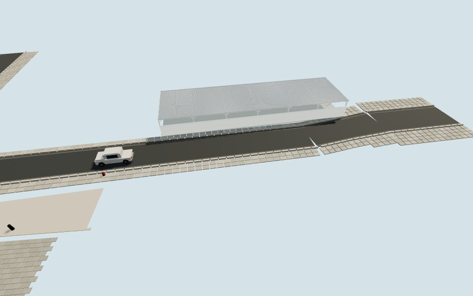

Una estructura abierta
Lámina acanalada con relieve de verdad, vigas y correas, apoyos, diagonales, bordes plegados y acceso lateral. El techo no bloquea la caminata como lo haría un cubo sólido.
PRIMER FRENTE SUR · R-001 · P01 / P02
El arranque de Obregón tiene un estacionamiento con cubierta metálica. Este piloto lo incorpora a la maqueta con estructura abierta, materiales propios y detalle constructivo.
Primer ensayo de detalle exterior. Dimensiones estimadas; la arquitectura del resto del sector conserva su estado anterior.
MISMO PUNTO · MISMO RUMBO · MISMA LUZ
P02 · 29.0758917, −110.9553893 · rumbo 185°. Las vistas de planta y cuadra toman este punto como ancla.

La versión anterior omitía esta cubierta y tenía una jardinera provisional en su lugar. La comparación conserva iluminación, cámara y materiales del resto de la escena; no compara contra una fotografía.
QUÉ CAMBIÓ EN ESTE PILOTO
Lámina acanalada con relieve de verdad, vigas y correas, apoyos, diagonales, bordes plegados y acceso lateral. El techo no bloquea la caminata como lo haría un cubo sólido.
Color, relieve fino y respuesta a la luz por superficie. Muro y cubierta en 1K; perfiles y piso en 512 px. Las texturas se repiten por metro, sin estirarse a lo largo del frente.
Placas y pernos, tapas de perfiles, remate del muro y malla ciclónica con transparencia. Mapas compartidos y pernos por instancias; en pantallas táctiles, texturas de 512 px.
EVIDENCIA Y LÍMITES
Estacionamiento abierto, cubierta metálica ligera, apoyos claros, muro blanco y cerramiento lateral. Se consultaron las panorámicas existentes del tablero; no se usaron como texturas.
Abrir referencia P01 ↗Frente aproximado de 32 m, profundidad de 9 m y altura de 3.3 m. La posición tiene incertidumbre de unos 5 m; largo ±3 m, fondo ±2 m y altura ±0.5 m. La separación de apoyos y sus uniones son interpretaciones constructivas.
Quedan pendientes los límites posteriores, la configuración interior y la gráfica del muro. Esta entrega no certifica precisión arquitectónica ni equivalencia visual con GTA V.
MÉTODO PARA LOS SIGUIENTES INMUEBLES
Después: mediciones propias, detalles de fachada y niveles de geometría según distancia. La fluidez se deberá comprobar en los dispositivos que use Amalaya; esta revisión no ofrece una cifra de fps.